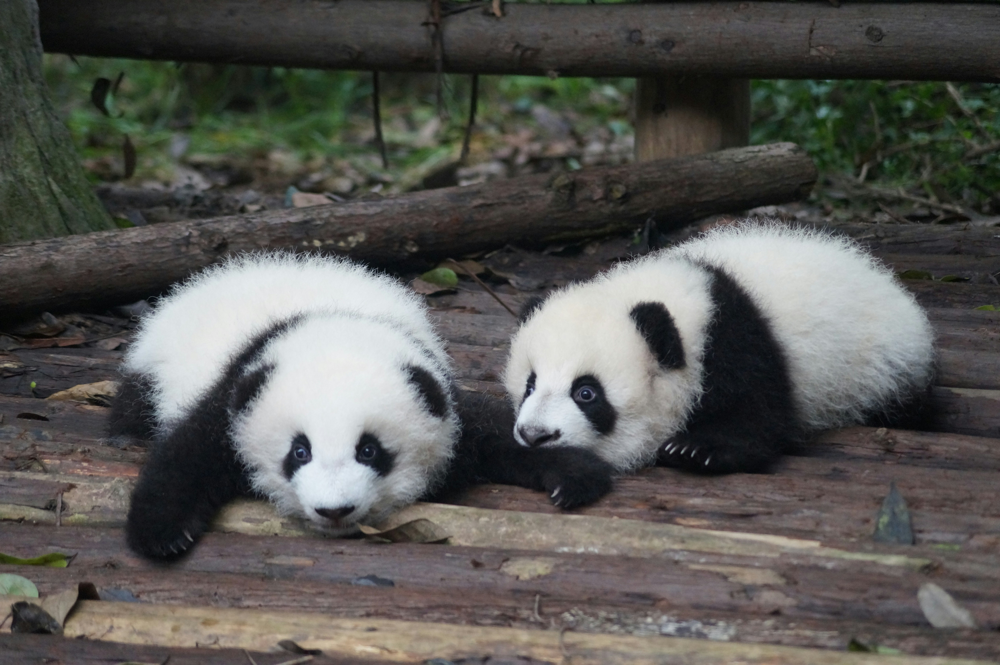
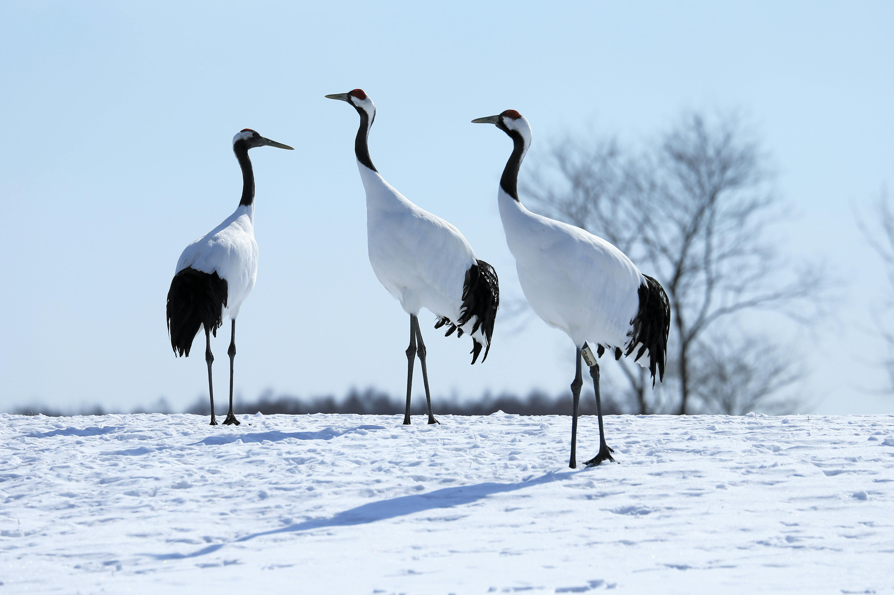

Wildlife of China
China isn't just giant pandas (though they're pretty cute). From snowy mountain peaks to bamboo forests, here are five incredible animals that call China home.
Did you know?
China is one of 17 "megadiverse" countries — home to more than 10% of the world's animal species. Many of these animals live nowhere else on Earth.
Four Wild Animals of China
Meet the stars.




"If you ony do what you can do, you will never be more than who you are."
- Master Shifu, Kung Fu Panda
Watch: Hua-Hua the Giant Panda
Hungry again? Back to Mouth-Watering Goodness → | Or explore attractions →